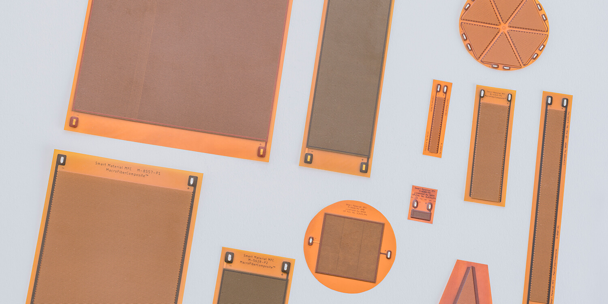
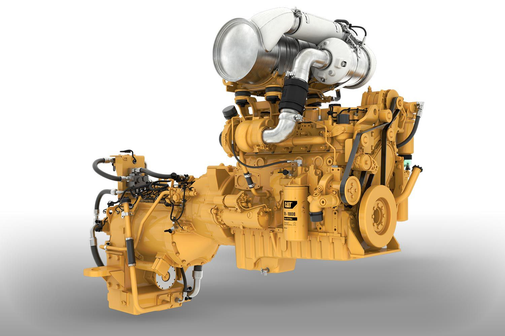
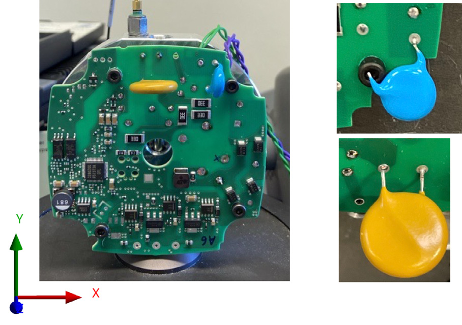

2017 — 2020
IIT Madras
M.S. · Applied MechanicsReduced-order models and control of flexible structures. Project Associate at IC&SR, 2018–2021, with electromechanical FEA and a dSPACE active-control facility.
I’m Hiren Patel. I connect coupled physics, experiments, and software to build more reliable products.



THE INDUSTRIAL CONNECTION
Different products. Shared questions about vibration, heat, constraints and reliability.
Flexible arms · positioning stages
Vibration control + compact modelsVehicles · rail · powertrain
Durability + support layoutInverters · drives · battery electronics
Thermal paths + coupled mechanicsLightweight panels · instrument electronics
Reduced models + conduction coolingAssembly tooling · fixtures · automation
Strain control + repeatable CAEPumps · controllers · diagnostic devices
Test-to-model reliability + simulationPotential applications of the demonstrated methods; each product needs its own model and validation.
02 / KEEP ASKING
From a physical control loop to reusable analysis tools. Open a question to see the method and evidence.
PUBLIC MATLAB SOURCE
Electromechanical FE, SEREP, LQR and uncertainty studies. Related research code; paper results use the published benchmarks.
03 / THE PERSON BEHIND THE MODELS
I like the point where a difficult engineering question becomes something you can test, understand, and use.
I work across electromechanical control, thermo-mechanical analysis and structural reliability—from piezoelectric and MFC smart materials to FR-4/copper electronics.
At Grundfos and Aalborg University, I’m developing digital-twin methods for pump electronics as an MSCA APRIORI doctoral researcher. My earlier work spans production ML at Caterpillar and reduced-order control and experiments at IIT Madras.
THE JOURNEY SO FAR
2017 — NOW2017 — 2020
Reduced-order models and control of flexible structures. Project Associate at IC&SR, 2018–2021, with electromechanical FEA and a dSPACE active-control facility.
2021 — 2024
Powertrain ROMs, vibration/acoustic diagnosis and a production CNN for journal-bearing wear grading.
2024 — PRESENT
Digital twins, PCB reliability, and simulation automation. PhD completion expected May 2027.
MODELLING · TESTING · BUILDING
GOOD WORK STARTS WITH A CONVERSATION
Simulation & model reduction. Test & verification.
Engineering software that reaches the team.